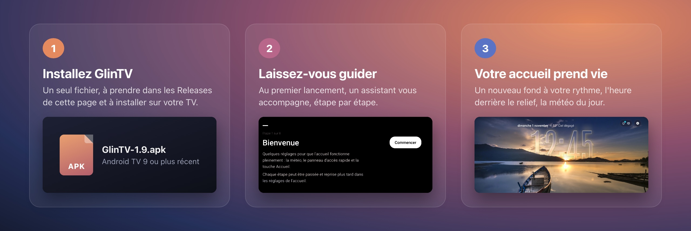
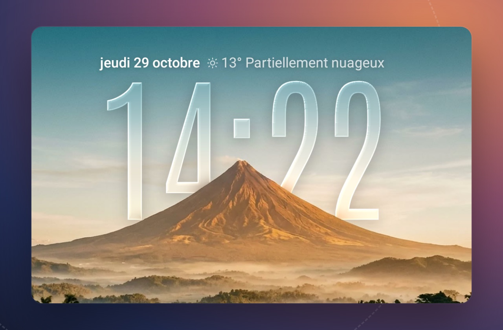
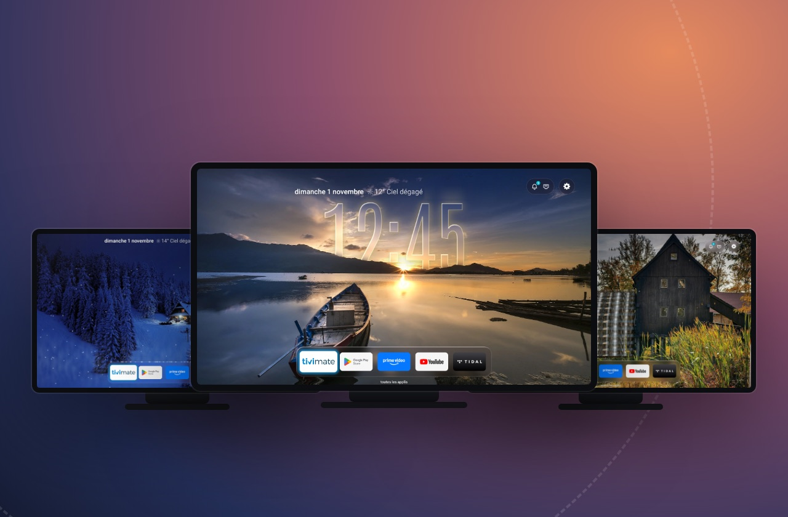
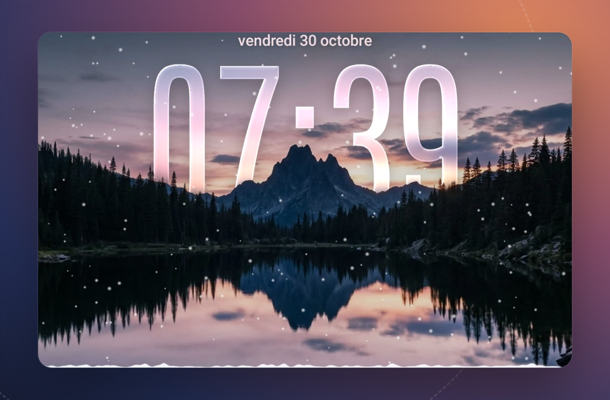
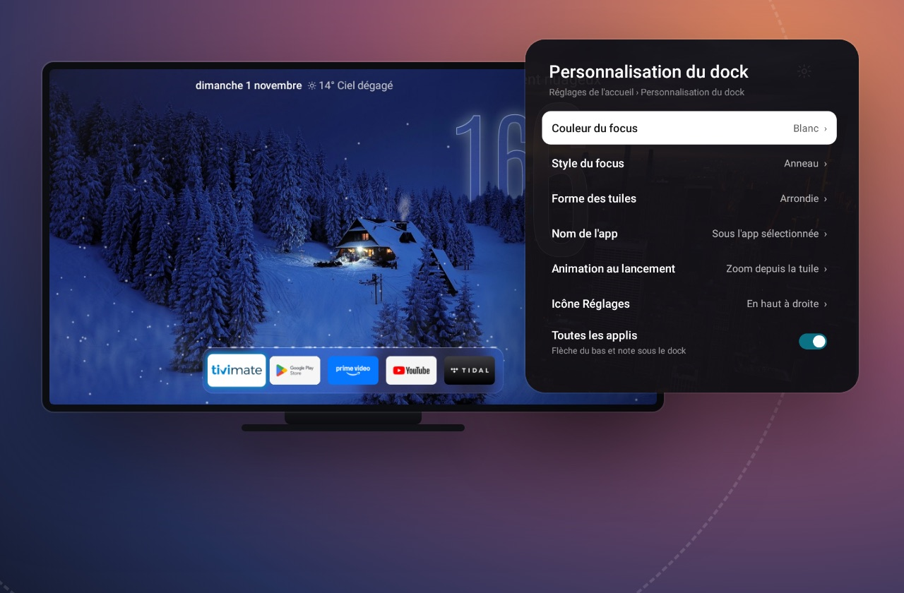

GlinTV remplace l'écran d'accueil de votre TV Android. À la place des rangées de vignettes : une grande photo, l'heure en verre qui passe derrière les montagnes, la météo du jour et vos apps dans un dock.
Comment ça marche

Le fond change à votre rythme : de toutes les 5 minutes à une fois par jour, au lever et au coucher du soleil, ou à chaque retour sur l'accueil. Hors ligne, GlinTV tourne sur ses scènes intégrées.
Ce qu'il sait faire

L'heure derrière le relief
L'horloge en verre se glisse derrière les sommets, les clochers, les toits. Sur les photos en ligne aussi : GlinTV repère le ciel sur la TV elle-même et place l'heure là où la photo s'y prête.

Un nouveau paysage, encore et encore
Paysages et villes intégrés, image du jour de Bing, photos de Wallhaven et de Reddit : vous cochez vos sources, GlinTV les mélange. Et quelques surprises certains jours.

La météo s'invite
Pluie, neige, brouillard ou orage : l'effet suit la météo réelle de votre lieu. La neige s'accumule sur le dock, les gouttes y perlent. Un réglage suffit pour tout couper.

Un dock à votre goût
Vos apps favorites dans une rangée de verre. Couleur et style de la sélection, forme des tuiles, animation au lancement : tout se règle à la télécommande. Les autres apps restent sous « toutes les applis ».
Et aussi : un mode sombre qui baisse l'écran en douceur le soir, un panneau d'accès rapide (Image, Son, Entrées, Bluetooth et vos notifications) et, si vous l'activez, la recherche automatique des mises à jour.
Installer
GlinTV s'installe à partir de son fichier APK. Trois façons de faire, au choix.
Avec l'app Downloader (la plus simple)
- Sur la TV, installez Downloader depuis le Play Store.
- Autorisez Downloader à installer des applis : dans les paramètres de la TV, Sources inconnues ou Installer des applis inconnues (l'emplacement varie selon la TV, souvent sous Applications › Sécurité et restrictions).
- Dans Downloader, tapez le code 6257974 (ou l'adresse complète de l'APK :
https://github.com/NoktuaLabs/GlinTV-releases/releases/latest/download/GlinTV-latest.apk). Le code mène toujours à la dernière version. - Une fois le fichier téléchargé, choisissez Installer.
Avec une clé USB
- Sur un ordinateur, téléchargez
GlinTV-<version>.apkdans Releases et copiez-le sur une clé USB. - Branchez la clé sur la TV et ouvrez le fichier avec un gestionnaire de fichiers (à installer depuis le Play Store si la TV n'en a pas).
- Autorisez ce gestionnaire à installer des applis quand la TV le demande, puis choisissez Installer.
Avec adb (pour les habitués)
- Activez le débogage réseau dans les options pour les développeurs de la TV.
- Depuis l'ordinateur :
adb connect <adresse-ip-de-la-tv>, puisadb install GlinTV-<version>.apk.
Au premier lancement, GlinTV vous guide : service de l'accueil, notifications, accueil par défaut. Chaque étape de l'assistant peut être passée, puis reprise dans les réglages, sous Configurer l'accueil.
Configuration requise
- Android TV 9 ou plus récent.
- Une connexion Internet pour la météo et les photos en ligne. Sans elle, les scènes intégrées restent disponibles.
Questions fréquentes
Pourquoi GlinTV n'est-il pas sur le Play Store ?
GlinTV est publié sur GitHub, sous forme de fichier APK. Vous l'installez vous-même sur la TV, une seule fois ; c'est pour cela qu'Android demande d'autoriser l'installation d'applis inconnues. Chaque version est signée par NOKTUA : avant d'installer une mise à jour, GlinTV vérifie cette signature et refuse un fichier qui ne la porte pas.
Comment se font les mises à jour ?
Chaque version est publiée dans Releases, avec sa note de version. Activez Réglages › Système › Mises à jour automatiques : GlinTV cherche alors une nouvelle version une fois par jour et vous la propose sur l'accueil, jamais par-dessus une app. Vous choisissez « Mettre à jour » ou « Plus tard ». Android demande toujours de confirmer l'installation ; la première fois, il vous fait autoriser GlinTV à installer des applis. Sans cette option, installez le nouvel APK par-dessus l'ancien, avec l'une des méthodes ci-dessus : vos réglages sont gardés.
Quelles autorisations GlinTV demande-t-il, et pourquoi ?
- Service de l'accueil (accessibilité) : capter la touche Accueil et la touche du panneau d'accès rapide, et afficher ce panneau par-dessus les apps. Il ne lit ni le texte à l'écran ni le contenu des fenêtres.
- Accès aux notifications : les afficher dans le panneau d'accès rapide. Facultatif.
- Position approximative : seulement si vous choisissez « Utiliser la position de la TV » pour la météo. Sinon, vous tapez le nom d'une ville.
- Installation d'applis : installer les mises à jour de GlinTV, toujours avec votre confirmation.
- Accueil par défaut : pour que GlinTV s'affiche quand vous appuyez sur Accueil.
Chaque autorisation se donne dans l'assistant, et chacune peut être refusée.
Que deviennent mes données ?
Il n'y a ni compte ni mesure d'audience. Vos réglages et vos notifications restent sur la TV. Le ciel des photos est repéré sur la TV elle-même. GlinTV contacte seulement :
- Open-Meteo, pour la météo du lieu choisi et la recherche de ville ;
- les sources de photos en ligne que vous avez cochées (toutes au départ) : Bing, Wallhaven, Reddit ;
- GitHub, pour chercher une mise à jour, si l'option est active.
Avec « Utiliser la position de la TV », GlinTV prend la position réseau de la TV ; si elle n'en donne pas, il demande la position approximative de votre connexion à ipwho.is ou geojs.io.
Fonds visibles sur cette page : images Pixabay et scènes générées de couch-tv.